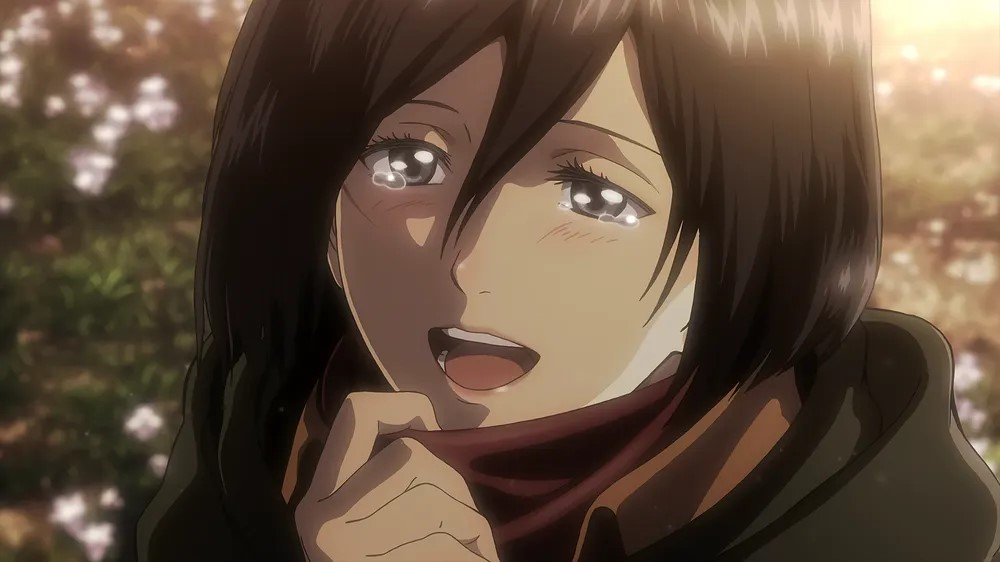

1. 어록
- "정우... 머플러를 둘러줘서 고마워..."
정우에게 고마움을 표현하며 한 말

- "저는 여미새입니다."
커밍아웃
- 다녀와 정우.
정우에게 매일 하는 인사
- 내가 가장 사랑하는 당신
이곳에서 편히 잠들기를
2025년
임지호가 정우 침대에 쓴 글
- 보고 싶어 환장한 녀석
유동민이 임지호를 비웃으면서 칭한 말이다. 이 이명으로 정우의 정체를 밝혀냈다. 자주 다시 유동민이 언급한다.
- 정우의 노예
정우와 함께하는 임지호를 목격한 송수진이 칭한 말이다.